基础知识 |
|||||||||
| 一、计算机系统 | |||||||||
| 1、按照冯·诺依曼结构，计算机的硬件系统由五个部分组成：运算器，控制器，存储器，输入设备，输出设备。 | |||||||||
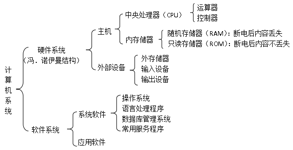 |
|||||||||
| 外存储器：软盘、硬盘、光盘、U盘、移动硬盘等 | |||||||||
| 输入设备：键盘，鼠标，游戏杆，触摸屏，手写笔，写字板，数字转换器，数码相机，数字摄影机，图像扫描仪，传真机，条形码阅读器，字符和标记识别设备，麦克风等 | |||||||||
输出设备：显示器、打印机、绘图仪、影像输出系统、语音输出系统、磁记录设备等 |
|||||||||
处理器CPU的规格参数是衡量其性能和功能的关键指标，主要包括以下几个方面： |
|||||||||
| 主频：处理器时钟频率，影响处理器的运行速度。主频越高，处理器的运行速度越快。 | |||||||||
| 核心数：处理器内部物理核心的数量，核心数越多，处理器的并行处理能力越强，可以同时执行更多的任务。 | |||||||||
| 缓存：处理器内部用于存储数据和指令的存储器。缓存容量越大，处理器可以更快地访问数据和指令，从而提高运行效率。 | |||||||||
| 除此还有其它指标：外频，倍频，接口，多媒体指令集，制造工艺，电压，封装形式，整数单元和浮点单元等 | |||||||||
| 2、计算机软件分为系统软件和应用软件 | |||||||||
| 系统软件： | |||||||||
| 操作系统：Linux，Unix，mac OS（苹果），Windows 10，移动操作系统常见的有安卓（Android），华为鸿蒙(Harmony)，Symbian，IOS（苹果） | |||||||||
| 语言处理程序：汇编程序、解释程序和编译程序等 | |||||||||
| 数据库管理系统：Oracle、MySQL、Microsoft SQL Server、IBM DB2、MongoDB、Redis、Cassandra、Neo4j等 | |||||||||
| 常用服务程序：诊断程序、调试程序和编辑程序 | |||||||||
| 应用软件： | |||||||||
| 文字处理：WORD,WPS 音频处理：GoldWave，Mp3ABCut(MP3剪切器) ， CoolEdit，WaveEdit 图形图像：PHOTOSHOP，CorelDRAW，Fireworks，Painter，Illustrator，FreeHand 动画软件：FLASH，万彩动画大师 视频处理：剪辑师，绘声绘影，剪映，Premiere 信息交流：钉钉，腾讯会议，ZOOM 杀毒软件：360，火绒安全，金山毒霸 程序设计：Python，Scratch，Java，c++，VB 文件搜索工具：everything |
|||||||||
| 3、常用的文件格式 | |||||||||
| 文档类：doc(x)，txt，wps，pdf 图形图像：bmp、gif、jpg、pic、png、tif 音频：wav，mid，wma，mp3 视频：AVI，rmvb，rm， mp4，3GP |
|||||||||
| 4、计算机在教育、设计、制造等领域的应用通常使用英文缩写来表示 | |||||||||
| 计算机辅助制造：CAM 计算机辅助分析：CAA
计 算机辅助设计：CAD 计算机辅助教学：CAI 计算机辅助实验：CAE |
|||||||||
| 5、图片题 | |||||||||
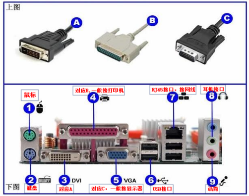 |
|||||||||
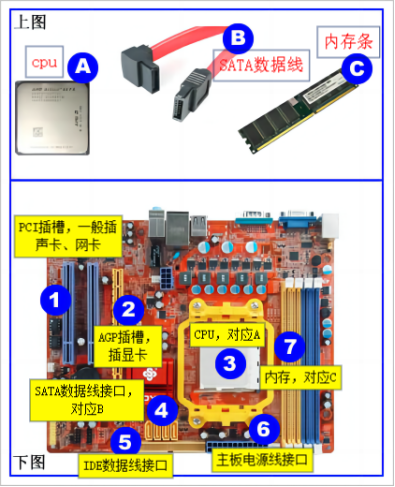 |
|||||||||
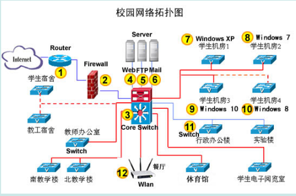 |
|||||||||
Router:路由器；Firewall：防火墙；Core Switch:中心交换机；Server：服务器 |
|||||||||
| 二、程序设计基础 | |||||||||
| 1、程序设计的三种基本结构： | |||||||||
|
|||||||||
| 2、算法的描述：自然语言，流程图，伪代码 | |||||||||
| 3、使用流程图对该算法进行描述时使用的符号： | |||||||||
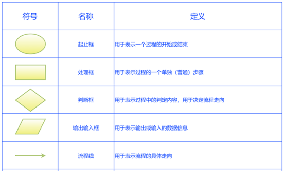 |
|||||||||
| 三、网络基础 | |||||||||
| 1、WAN：广域网 MAN：城域网 LAN：局域网 WLAN：无线局域网 | |||||||||
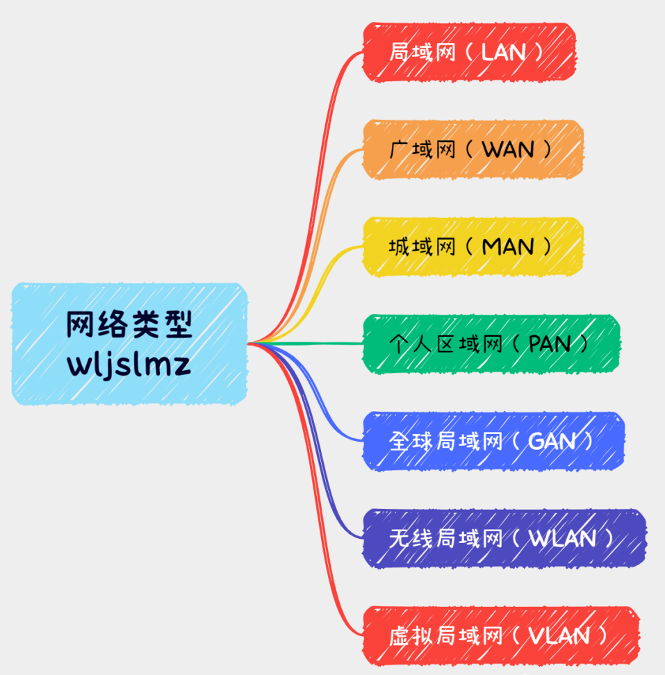 |
|||||||||
| 2、网络传输介质是网络中传输信息的载体，分为有线和无线两大类。 | |||||||||
| 有线：双绞线，光纤，同轴电缆 | |||||||||
| 无线：微波，激光，红外线，卫星 | |||||||||
| 3、网络拓扑结构：总线型，星型，环型 | |||||||||
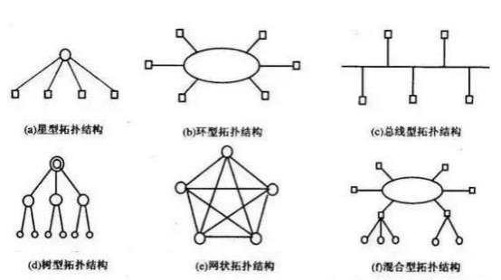 |
|||||||||
| 4、IP地址：目前常用的IPv4，由32位二进制数组成，分成4组，每组8位，换成十进制，每组数的范围0--255。 | |||||||||
| 5、常用协议 | |||||||||
| TCP：传输控制协议 IP：网际互联协议 HTTP：超文本传输协议 FTP：文本传输协议 POP3：邮件接收服务器 SMTP：邮件发送服务器 URL：统一资源定位器 ISP：互联网服务提供商 DNS：域名系统 |
|||||||||
| 6、机构性质域名 |
|||||||||
| com商业机构、edu教育部门、gov政府部门、mil军事部门、int国际组织、net网络组织、org非盈利组织 | |||||||||
| 7、地理域名 | |||||||||
| CN中国、UK英国、FR法国、RU俄罗斯、DE德国、IT意大利、US美国、HK香港、SE瑞典、JP日本、CH瑞士、NL荷兰、CA加拿大、TW台湾、KR韩国 | |||||||||
| 四、关于二进制 | |||||||||
| 1、二进制逢二进一 | |||||||||
| 举例：1001+1=1010，1011+1=1100 | |||||||||
| 2、二进制与十进制 | |||||||||
| 十进制转换为二进制： | |||||||||
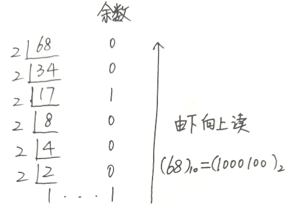 |
|||||||||
| 二进制转换为十进制： 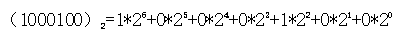 |
|||||||||
注意：在考试时要求二进制与十进制、十六进制的相互转换(正整数位)用计算器转换：开始菜单—>计算器—>查看—>程序员 |
|||||||||
| 3、数据编码 | |||||||||
文字编码：单字节编码(ASCII码和莫尔斯码)和双字节编码(国标码和统一码) |
|||||||||
ASCII码使用指定的7位或8位二进制数组合来表示128或256种可能的字符。 |
|||||||||
7位二进制表示(0000000-1111111)128种编码。 |
|||||||||
图像编码：位图又叫点阵图,采用位映射存储格式,每一个像素映射一个数据,存放在以字节在计算机二进制系统中,每个0和1就是一个位(bit),数据存储的最小单位;8个二进制黑白图像,每个像素有2种可选颜色(黑、白),称为1位图像。16色图像有16种可选颜色,称为4位图像(2^4=16);256色图像称位8位图像(2^8=256) |
|||||||||
位图图像存储空间的计算公式是: |
|||||||||
下面表格以分辨率800×600的位图图像为例,计算机各种类别位图图像的存储空间。 |
|||||||||
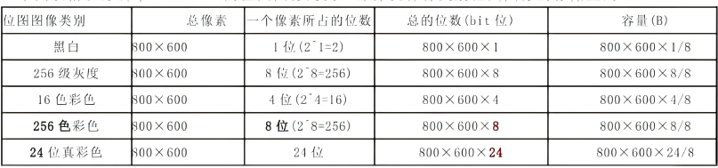 |
|||||||||
例1：有一幅24位的位图图像,像素为1024*800,试确定其数据文件的大小。 |
|||||||||
| 例2：为了制作电子报刊，小王在网上找了张扩展名为bmp的未经压缩的图片，图片的大小是360KB，分辨率是192×640，请你计算一下图片的位深度，哪一项是正确的（A） A.24位 B.2位 C.4位 图片大小的计算方法：分辨率*位深度 本题：位深度=（360*1024*8） / （192*640）=24 |
|||||||||
声音编码：模拟声音信号(模数转换A/D)采样\量化\编码成数字信号。 |
|||||||||
采样：就是每隔一时间段,从连续的波形上取一点。 |
|||||||||
声音的质量取决于采样频率和量化位数。采样频率越高,量化的分辨率越高,所得声音的保真程度也越好,但数据量会越大。 |
|||||||||
声音存储量的计算: |
|||||||||
| 例：通常对声音编码的基本方法是按照一定的时间间隔采集声波的振幅，并将其转换为二进制数序列，即通过采样、量化、编码来实现。一个3分钟的双声道、16位采样位数、44.1kHz采样频率的声音文件，数据量大约为（B ） A.516.80KB B.30.28MB C.516.80MB 计算方法：采样频率（Hz）×采样位数（bit）×声道数×时间（秒） 本题：（44.1*1000*16*2*180）/8/1024/1024=30.28MB |
|||||||||
一段未经压缩的视频文件存储量的计算： |
|||||||||
| 视频文件存储量=一帧图像文件存储量×帧频×时间(帧频×时间=帧数) | |||||||||
| 五、其他 | |||||||||
| 1、数据的表现形式多种多样，常见的有数字、文字、图形、图像、声音和视频等形式 | |||||||||
2、数据和信息的关系：数据是信息的符号表示；信息是数据的内涵，是对数据的语义解释 |
|||||||||
| 3、数据处理就是把原始数据转换成人们所需要的信息的过程 |
|||||||||
| 4、完整的数据处理过程一般包括数据的采集、加工、传输、存储、检索和输出六个环节 | |||||||||
信息的主要特征：时效性，共享性，载体依附性，可传递性，不完全性，可伪性，可存储性。 |
|||||||||
| 信息系统的生命周期可划分为问题定义、可行性研究与计划、需求分析、概要设计、详细设计、编码实现、测试、使用和维护几个阶段 | |||||||||
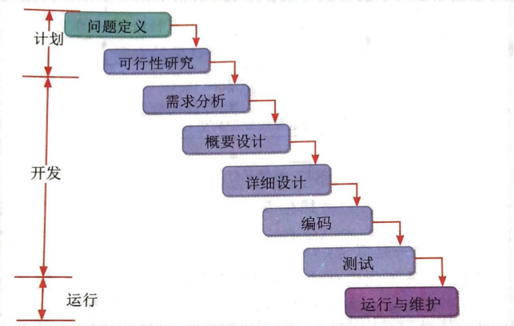 |
|||||||||
| 5、 计算机存储容量(文件大小)单位：bit—B—KB—MB—GB—TB | |||||||||
| 1B(字节)=8位 1KB=1024B 1MB=1024KB 1GB=1024MB 1TB=1024GB | |||||||||
6、 电脑办公常用的快捷键 |
|||||||||
1）Ctrl+C复制 2）Ctrl+V粘贴 3）Ctrl+X剪切 4）Ctrl+A全选 5）
Ctrl+I斜体6）Ctrl+B加粗 7）Ctrl+F查找 8）Ctrl+H替换9）Ctrl+S保存10）Ctrl+P打印 |